Префектура Аомори · Сираками-Санти · природа
Сираками-Санти: буковый лес, синие озёра Дзюнико и вода, которая кормит побережье
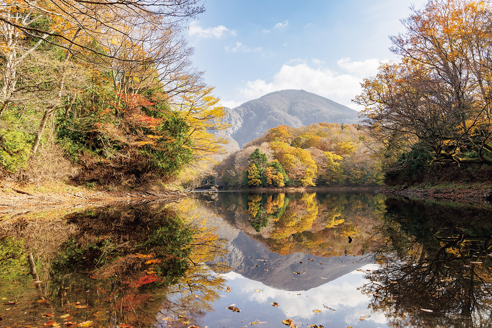
Сираками-Санти называют «раем жизни»: здесь растёт крупнейший в Восточной Азии древний буковый лес. Путешествие по этим местам удобно строить вокруг воды: от синих озёр в лесу до тайменя, сладостей и храма моряков на берегу Японского моря.
Наследие
Лес, который держит воду
Сираками-Санти это общее название огромного горного края площадью около 130 000 гектаров на юго-западе префектуры Аомори и северо-западе соседней префектуры Акита. Здесь растёт крупнейший в Восточной Азии первичный буковый лес, живут больше 90 видов птиц и все млекопитающие острова Хонсю. Ради этого разнообразия в 1993 году ядро гор, около 17 000 гектаров, внесли в список Всемирного природного наследия ЮНЕСКО.
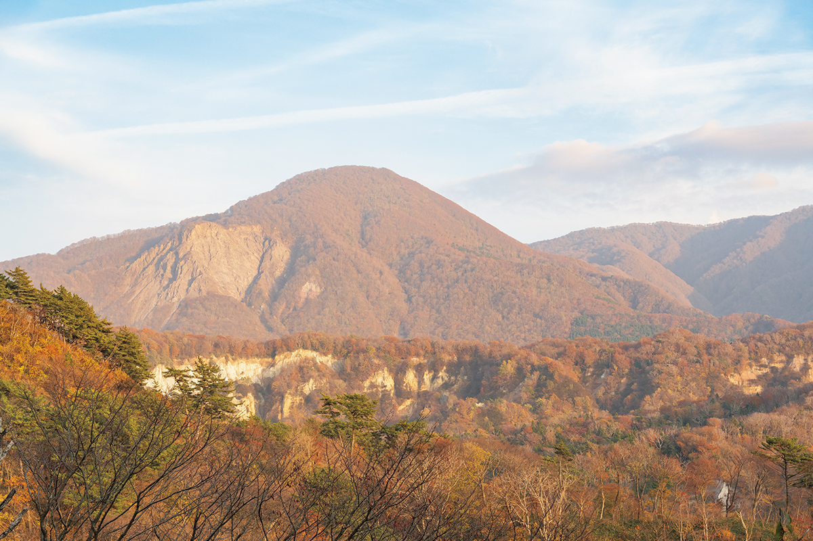
Почему бук сохранился именно здесь? Около 30 млн лет назад буковые леса росли и у Северного полюса. В ледниковый период они отступили на юг, а остальным растениям путь преградили горы, и почти везде флора обеднела. В Японии таких высоких хребтов, как на материке, не было, поэтому в Сираками-Санти уцелел буковый лес, близкий к древней флоре приполярных широт.
Бук здесь главный. Это листопадное дерево, символ прохладных лесов Японии, и его лес держит воду так хорошо, что его зовут «природной плотиной». Дождь и талый снег годами просачиваются в землю, выходят родниками, питают растения, зверей и людей, а потом по рекам уходят в море и делают его богатым. Мягкую чистую воду Сираками-Санти дают именно буки.
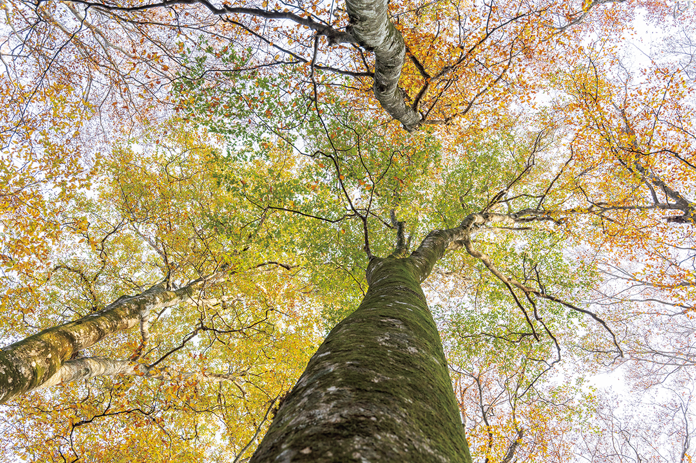
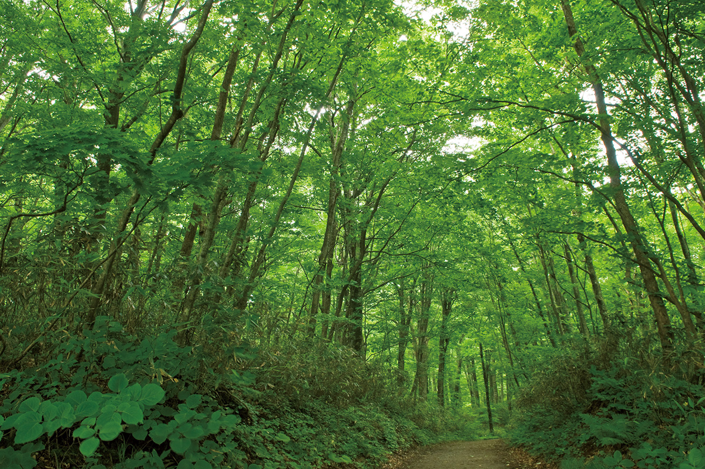
Вокруг гор сложились две разные культуры. На востоке, в Хиросаки, выросли ремёсла из дерева, например посуда BUNACO из бука. На западе, в городке Адзигасава и в Фукауре на берегу Японского моря, жизнь строилась вокруг воды Сираками.
Для прогулок в горах проложено много маршрутов. Новичкам подойдёт буковая тропа «Тропа наследия», а к знаменитым водопадам ведёт маршрут по ущелью Анмон. От аэропорта Аомори до гор около 1 часа 50 минут на машине, от станции Син-Аомори около 1 часа 10 минут.
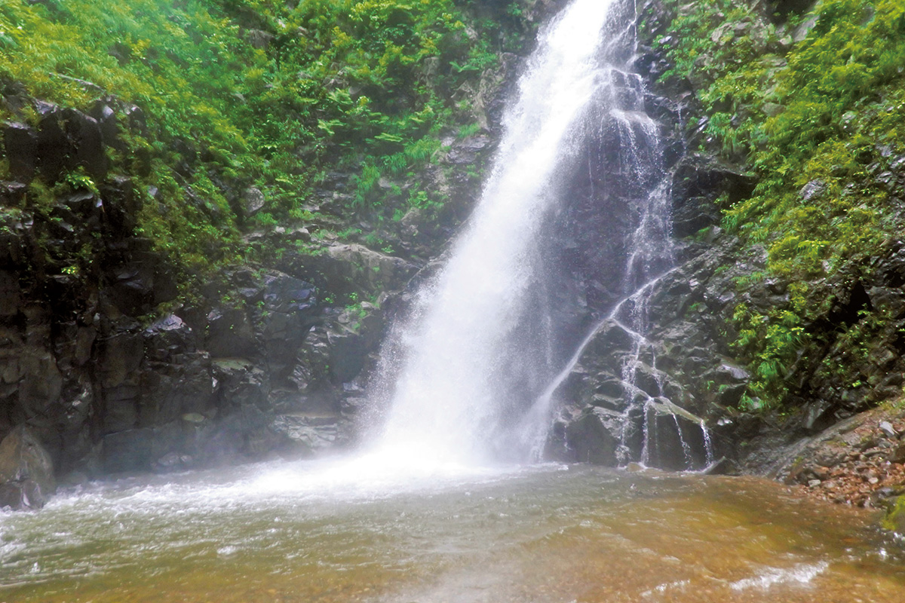
Центр Всемирного наследия Сираками-Санти (Нисимэя)
- Адрес
- префектура Аомори, уезд Накацугару, Нисимэя, Тасиро, Канда, 61-1
- Телефон
- +81 172-85-2622
- Часы работы
- 8:30–17:00
- Выходные
- суббота, воскресенье, праздники
- Сайт
- tohoku.env.go.jp
Дзюнико
Тридцать три озера в лесу
Чтобы увидеть воду Сираками-Санти своими глазами, стоит начать с Дзюнико, группы из 33 озёр и прудов на западе гор. Название значит «двенадцать озёр»: столько их видно с горы Кудзурэяма, которая возвышается к востоку.
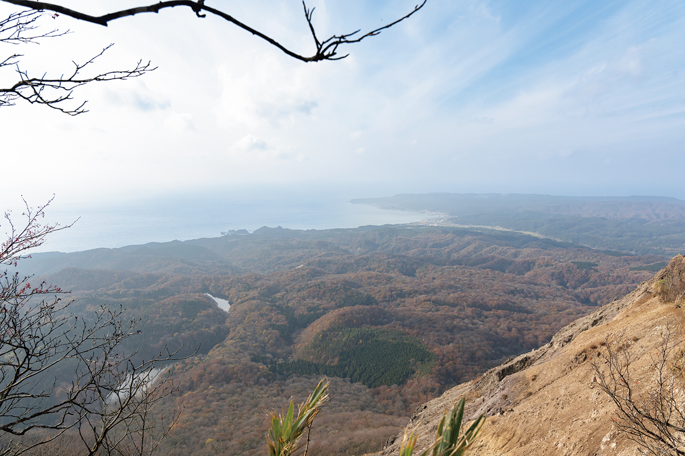
«Этот район хранит такое же разнообразие жизни, как и ядро наследия», говорит гид, который водит людей по Сираками-Санти 25 лет. Больше 30 лет он ещё и охотится в этих горах как матаги. Так называют горных охотников: по преданию, они живут в Сираками с эпохи Хэйан. Матаги соблюдают строгие правила, берут у леса медведя, горную птицу или зайца ровно столько, сколько нужно, собирают горные травы и передают знания о том, как делать запасы.
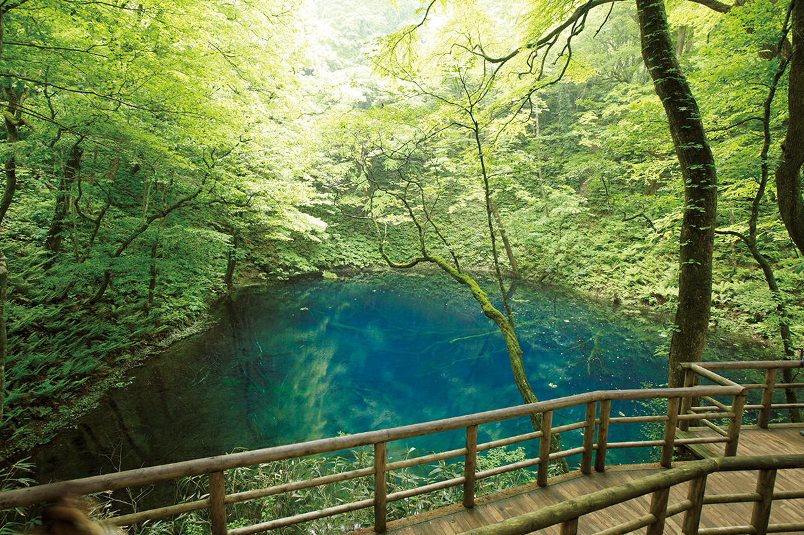
Машину можно оставить у лесной лавки «Кёроро» и минут десять идти в лес. Там открывается Аоикэ. Вода такая прозрачная, что на глубине 9 метров видны упавшие на дно стволы, а цвет у неё яркий кобальтовый, будто ненастоящий. Дальше тропа ведёт к пруду Нагаикэ, куда летом прилетает редкий зимородок акасёбин, его называют «огненной птицей». Потом к пруду Вакицубо-но икэ, одному из самых прозрачных в Дзюнико: на его берегу бьёт родник, который вошёл в список ста лучших вод Японии.
«Здесь бук, новые виды растений, которые нашли только в Сираками, а весной поют 26 видов птиц. Хочется, чтобы люди почувствовали, как бурлит жизнь»
гид по Сираками-Санти
Этот лес сложился около 8000 лет назад, в начале эпохи Дзёмон. Лес Дзюнико первым в префектуре Аомори получил медицинское подтверждение того, что прогулки по нему снимают стресс. Маршрутов здесь много, и с гидом каждый из них интереснее.
Вкус воды
Таймень, камбала и сладость с кораблей
На западе префектуры вода Сираками-Санти стала и кухней. Главная её звезда это сахалинский таймень, по-японски ито. На Хонсю эту рыбу считали исчезнувшей, но в Фукауре и Адзигасаве её научились разводить. Помогла вода горных ручьёв: круглый год её достаточно, и температура почти не меняется.
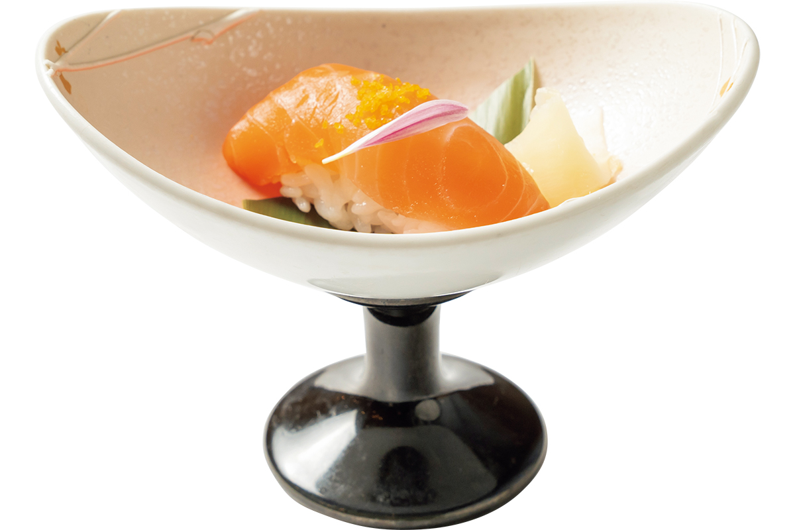
Мясо тайменя называют «речной торо», и попробовать его можно лишь в немногих местах: в самой Адзигасаве и в коттеджах «Аонэ Сираками Дзюнико», где разводят свою рыбу. Вода с гор уходит в Японское море и делает его богатым, поэтому на побережье много закусочных с местной рыбой.
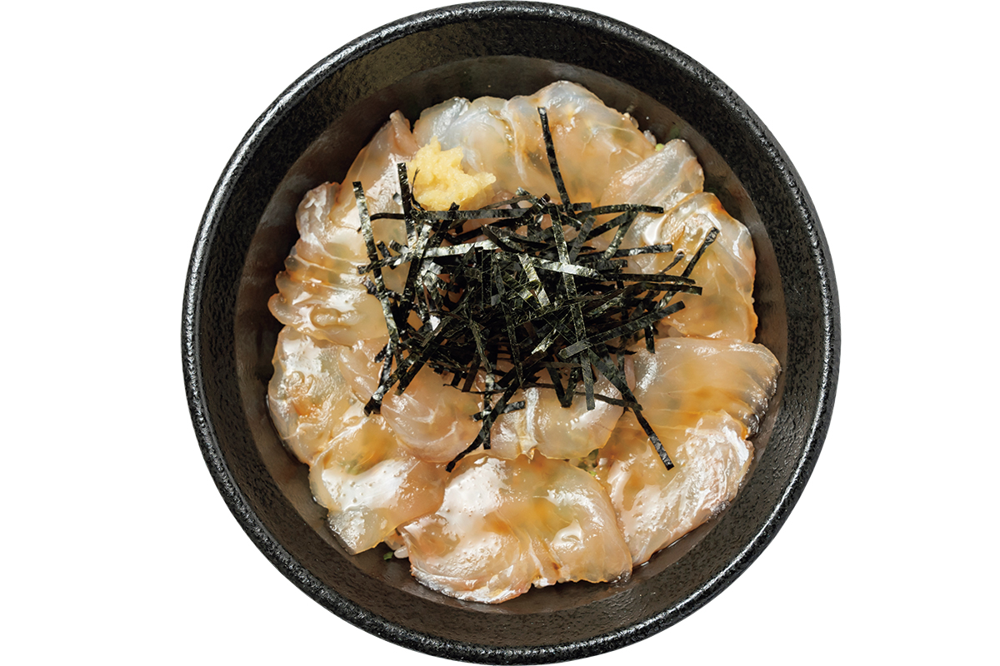
Побережье было и стоянкой кораблей Китамаэ, торговых судов эпохи Эдо, и вместе с ними сюда приходили обычаи других краёв. Так здесь появились «кудзира-моти», «китовые моти»: их рецепт хранит кондитерская «Мураками-я» в Адзигасаве.
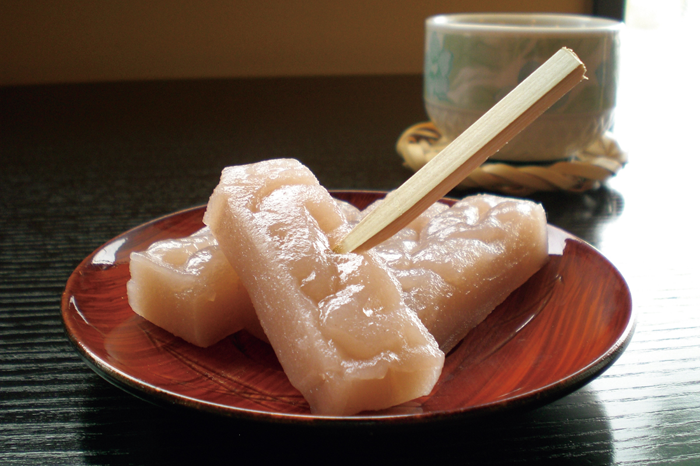
Адреса
Кофе, ночлег, рыба и храм моряков
Кафе «Мидзу то кохи»
Кафе принадлежит компании, которая разливает в бутылки родниковую воду «Сираками-санти-но мидзу», прошедшую через лесную подстилку из буковых листьев. Кофе из семи стран, от Бразилии до Колумбии, заваривают на этой очень мягкой воде, и вкус получается округлым. Есть и настоящий эспрессо с напитками на его основе.
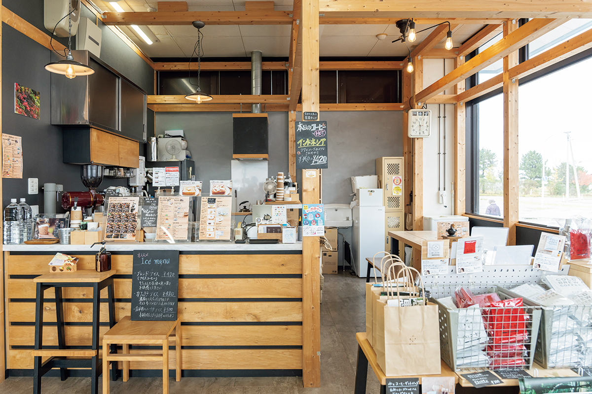
Кафе «Мидзу то кохи»
- Адрес
- префектура Аомори, уезд Нисицугару, Адзигасава, Хонмати, 246-4, в «Уми-но эки Вандо»
- Телефон
- +81 173-72-7761
- Часы работы
- 9:00–17:00 (последний заказ 16:30)
- Выходные
- без выходных
«Аонэ Сираками Дзюнико»
Комплекс стоит совсем рядом с озёрами Дзюнико и удобен как база для прогулок. В ресторане «Акасёбин» на территории подают таймень в разных видах: суши с нежным благородным вкусом (блюдо ужина только для гостей), салаты и другое.
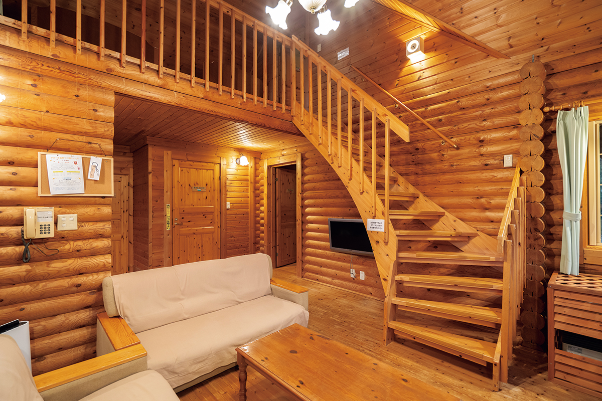
«Аонэ Сираками Дзюнико»
- Адрес
- префектура Аомори, уезд Нисицугару, Фукаура, Мацуками, Симохамамацу, 14
- Телефон
- +81 173-77-3311
- Цены / Вход
- от 16 500 иен за ночь с ужином и завтраком на человека (с налогом и сервисом)
Закусочная «Такива»
Закусочную держит оптовая фирма, которая много лет закупает рыбу в Адзигасаве, известной своими морепродуктами. Здесь жарят на углях огромную жаберную часть тунца, каму, подают юккэ-дон из камбалы, щедрый кайсэн-дон и свежайшие сашими. Зал похож на рыбный рынок, а к еде можно взять сакэ Аомори, например «Дэнсю».
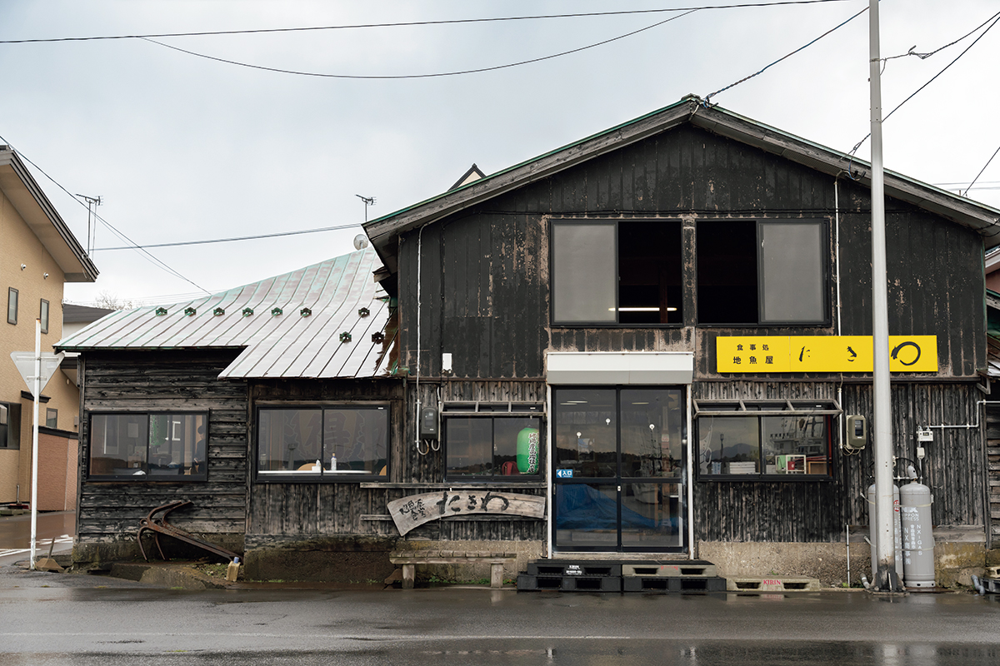
Закусочная «Такива»
- Адрес
- префектура Аомори, уезд Нисицугару, Адзигасава, Хонмати, 199
- Телефон
- +81 173-72-7531
- Часы работы
- 11:00–14:00 (последний заказ 13:30), до конца продуктов
- Выходные
- нерегулярно, с декабря по февраль закрыто
Храм Энгакудзи
По преданию, храм основал в 807 году Тамурамаро Саканоуэ (758–811). Он носил титул сэйи-тайсёгуна, полководца, которого императорский двор посылал покорять северные земли. Это один из старейших храмов префектуры. Фукаура процветала как «гавань ожидания ветра», где корабли Китамаэ пережидали шторм, и моряки особенно почитали этот храм. Те, кто выжил в буре, приносили сюда свои срезанные пучки волос тёммагэ, и их здесь хранится очень много.
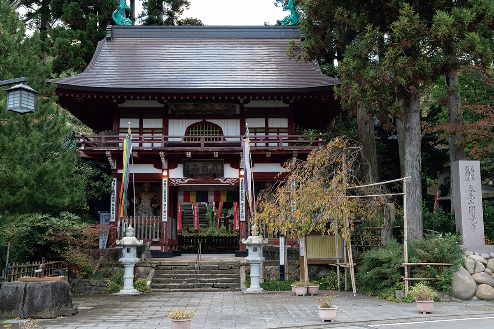
Храм Энгакудзи
- Адрес
- префектура Аомори, уезд Нисицугару, Фукаура, Фукаура, Хамамати, 275
- Телефон
- +81 173-74-2029
- Часы работы
- 8:00–17:00
- Выходные
- без выходных
- Цены / Вход
- сокровищница храма 500 иен
- Сайт
- engakuji.jp
Кондитерская «Мураками-я»
Лавку японских сладостей основали в эпоху Мэйдзи. Рецепт «кудзира-моти» описан в книгах эпохи Эдо как сладость Киото, а в Адзигасаву он пришёл вместе с торговлей кораблей Китамаэ. Делают её только из муки обычного и клейкого риса, бобов адзуки и сахара: вкус простой и тонкий, а текстура мягкая и тягучая.
Кондитерская «Мураками-я»
- Адрес
- префектура Аомори, уезд Нисицугару, Адзигасава, Хонмати, 72
- Телефон
- +81 173-72-3021
- Часы работы
- примерно 8:30–17:30 (летом примерно до 18:00)
- Выходные
- нерегулярно
Фото: Кадзуя Хаяси.